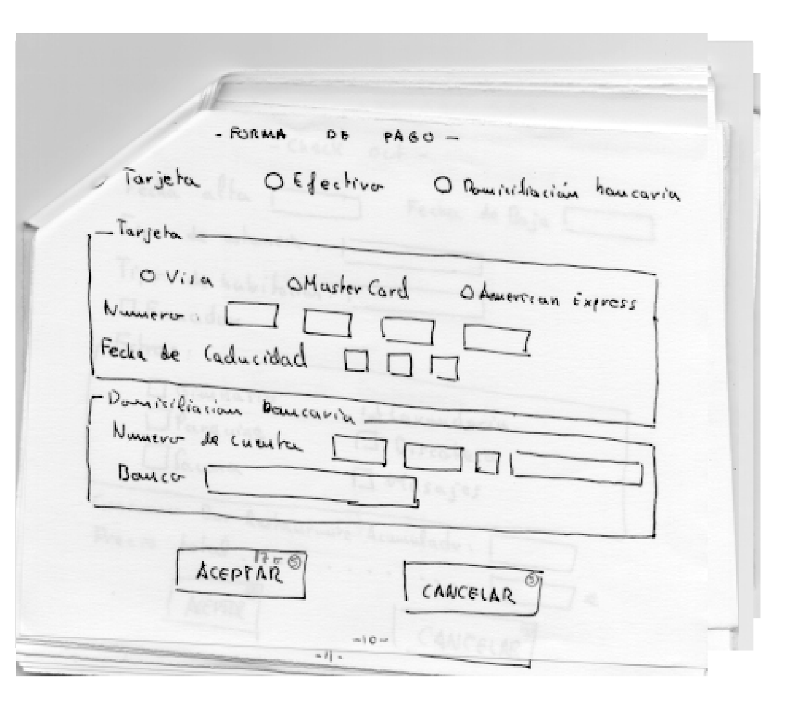
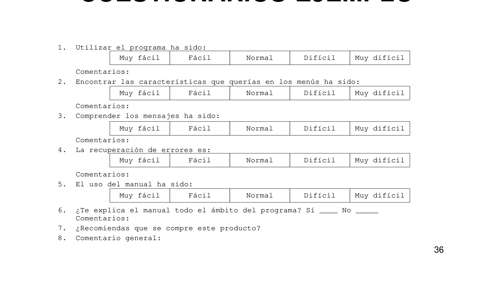

Prototipado y evaluación
Temas de IPO · 3/6
3.1 Introducción
La evaluación de la usabilidad es una parte básica del diseño centrado en el usuario: sin evaluar es imposible saber si un sistema cumple las expectativas de los usuarios y se adapta a su contexto social, físico y organizativo. Los prototipos permiten hacer esas evaluaciones desde las primeras etapas del diseño, antes de tener el sistema construido.
 El prototipado y la evaluación acompañan a todas las fases del ciclo (ver tema 1).
El prototipado y la evaluación acompañan a todas las fases del ciclo (ver tema 1).
3.2 Usabilidad
3.2.1 Definiciones
La norma ISO 9241-11 (1998) define la usabilidad como la medida en la que un producto puede ser usado por determinados usuarios para conseguir objetivos específicos con efectividad, eficiencia y satisfacción en un contexto de uso especificado:
| Componente | Qué mide |
|---|---|
| Efectividad | Precisión y plenitud con que los usuarios alcanzan sus objetivos. Asociada a la facilidad de aprendizaje, la tasa de errores y la facilidad de recuerdo |
| Eficiencia | Precisión y plenitud en relación con los recursos empleados (tiempo, esfuerzo) |
| Satisfacción | Comodidad y actitud positiva al usar el producto. Es subjetiva |
La norma ISO/IEC 9126-1 (2000), sobre calidad del software, la define como la capacidad de un producto software de ser entendido, aprendido, usado y atractivo para el usuario en unas condiciones específicas.
Un sistema es usable si los usuarios pueden hacer sus tareas rápida y fácilmente, y la usabilidad descansa en cuatro puntos: centrarse en el usuario; conocer bien el contexto de uso (la gente usa los productos para ser más productiva); que el producto satisfaga las necesidades del usuario (son personas ocupadas intentando hacer tareas); y que son los usuarios, no los diseñadores ni los desarrolladores, quienes deciden cuándo un producto es fácil de usar.
Analogía: la llave del coche
Una llave es efectiva si abre el coche; eficiente si lo abre a la primera sin forcejear; y da satisfacción si además es cómoda de llevar. Un mando a distancia que abre desde 10 metros gana en las tres.
3.2.2 Beneficios
Tener en cuenta la usabilidad reduce los costes de producción (evita rediseños y cambios posteriores), de mantenimiento y soporte (los sistemas usables necesitan menos formación y ayuda) y de uso (mejoran la productividad), y mejora la calidad del producto, algo clave en un mercado que exige productos fáciles de usar.
Por eso debe considerarse en todo momento: antes de empezar el proyecto (conocer a los usuarios y qué aspectos del producto les interesan más), durante todo el desarrollo (con pruebas continuas) e incluso después de lanzarlo (preguntando a los usuarios por sus necesidades y su actitud). Los prototipos permiten que el usuario participe y evalúe el producto desde las primeras fases.
3.3 Prototipos
Un prototipo es una representación limitada de un diseño que permite a los usuarios interaccionar con él y explorar sus posibilidades. Según qué parte del sistema cubren, hay dos enfoques:
| Prototipo vertical | Prototipo horizontal | |
|---|---|---|
| Qué incluye | Pocas características (una o varias partes del sistema) | Toda la interfaz, con todas sus características |
| Funcionalidad | Totalmente funcionales | Sin funcionalidad por debajo |
| Para qué sirve | Probar a fondo una parte concreta | Probar la navegación y el aspecto general |
Analogía: la casa de muestra
Un prototipo horizontal es la maqueta de toda la urbanización: ves todas las casas y calles, pero no puedes entrar en ninguna. Un prototipo vertical es un único piso piloto terminado: puedes abrir los grifos y encender las luces, pero solo de esa vivienda.
3.3.1 Tipos de prototipos
Maquetas. Objetos hechos con materiales muy básicos para evaluar una parte física del sistema (por ejemplo, la forma de un mando).
Prototipos de papel. Se hacen con papel, tijeras, lápiz, post-it... para dibujar el diseño, lo que da gran velocidad y flexibilidad. Normalmente se dibuja una hoja (viñeta) por cada interacción posible. Se plantea un escenario de uso en el que el diseñador actúa como coordinador (hace de "ordenador", cambiando las hojas según lo que el usuario "pulsa") y un posible usuario intenta hacer algunas de las tareas. Sus ventajas: costes reducidos, rapidez para cambiar y que el usuario se desinhibe para criticar (no le da reparo tachar un dibujo a lápiz).

Pantalla de "forma de pago" dibujada a mano: opciones de tarjeta, efectivo o domiciliación, campos para el número y la caducidad, y botones Aceptar y Cancelar.Storyboard. Serie de viñetas que muestran cómo evoluciona la situación del usuario durante la interacción: una narración gráfica en cuadros consecutivos, a veces junto con escenarios.
Escenario. Historia de ficción con personajes, sucesos, productos y entornos. Maneja la configuración (sitúa la acción), los actores (la realizan) y el diagrama de la secuencia de acciones y eventos.
Vídeo. Permite rodar un escenario; útil para interfaces multimodales o para escenarios futuros.
Prototipo software. Primeras versiones de ciertas funcionalidades. Llegar aquí suele requerir varias iteraciones de prototipado y evaluación. Puede ser incremental (por componentes separados) o evolutivo (sirve de base a sucesivos refinamientos del diseño).
3.4 Evaluación
La evaluación es el conjunto de metodologías y técnicas que analizan la usabilidad de un sistema interactivo en distintas etapas del ciclo de vida, para crear mejores productos y ayudar a los usuarios a ser más productivos. Ojo: se tiende a primar la funcionalidad sobre la usabilidad. Al elegir un método hay que considerar el coste, quién evalúa y en qué etapa del ciclo de vida se está.
Hay tres grandes familias de métodos:
| Familia | Quién evalúa | Métodos |
|---|---|---|
| Inspección | Expertos, sin usuarios | Evaluación heurística, recorrido de usabilidad plural, recorrido cognitivo, estándares |
| Indagación | Se habla con los usuarios y se les observa | Observación de campo, focus group, entrevistas, logging, cuestionarios |
| Test | Usuarios reales haciendo tareas | Medida de prestaciones, thinking aloud, interacción constructiva, test retrospectivo, método del conductor |
Analogía: evaluar un restaurante
Inspección es mandar a un crítico gastronómico que revisa el local con su lista de criterios. Indagación es preguntar a los clientes qué les parece y observar cómo se mueven por el local. Test es invitar a clientes a cenar y medir cuánto tardan en pedir, cuántas veces llaman al camarero y si vuelven.
3.4.1 Inspección
Un pequeño grupo de evaluadores examina aspectos de usabilidad de la interfaz; no se basa en usuarios. Los inspectores pueden ser especialistas en usabilidad, consultores de desarrollo con experiencia en guías de estilo o usuarios finales que conozcan el dominio. Los métodos más importantes son la evaluación heurística, los recorridos cognitivos y la inspección de estándares.
Evaluación heurística
Analiza si la interfaz cumple unos principios reconocidos de usabilidad (la "heurística"), con entre tres y cinco evaluadores expertos. Cada evaluador revisa la interfaz por separado; al terminar, ponen en común y sintetizan los resultados. Hacerlo así asegura evaluaciones independientes e imparciales. Los resultados se recogen en informes escritos o haciendo que cada evaluador comente en voz alta a un observador mientras evalúa.
Las dos listas de principios más conocidas:
| 8 reglas de oro de Shneiderman | 10 heurísticas de Nielsen |
|---|---|
| 1. Esforzarse por la consistencia | 1. El estado del sistema debe ser siempre visible |
| 2. Crear atajos para usuarios avanzados | 2. Utilizar el lenguaje de los usuarios |
| 3. Ofrecer realimentación graduada a las acciones | 3. Control y libertad para el usuario |
| 4. Diseñar el diálogo para mostrar el trabajo pendiente | 4. Consistencia y estándares |
| 5. Gestión sencilla de errores | 5. Prevención de errores |
| 6. Fácil recuperación de acciones (deshacer) | 6. Minimizar la carga de memoria del usuario |
| 7. Control por parte del usuario | 7. Flexibilidad y eficiencia de uso |
| 8. Reducir la carga de memoria del usuario | 8. Diálogos estéticos y de diseño minimalista |
| 9. Ayudar a reconocer, diagnosticar y recuperarse de errores | |
| 10. Ayuda y documentación |
Ejemplos rápidos de las heurísticas de Nielsen: la barra de progreso de una descarga cumple la 1 (estado visible); decir "Carpeta" en vez de "Directorio" cumple la 2; el botón Deshacer cumple la 3; que el botón de guardar sea siempre el disquete cumple la 4; desactivar "Enviar" mientras falta un campo obligatorio cumple la 5, y mostrar las opciones en un menú en lugar de obligar a recordar comandos cumple la 6.
Para entenderlo mejor
10 Usability Heuristics for User Interface Design (Nielsen Norman Group) — las 10 heurísticas explicadas por su autor, con ejemplos (artículo, inglés). Los 10 principios de usabilidad de Jakob Nielsen — resumen rápido de las 10 heurísticas (vídeo, 2 min).
Recorrido cognitivo
Método de inspección que evalúa la facilidad de aprendizaje (sobre todo por exploración) y la comprensión. Se basa en los recorridos estructurales de la ingeniería del software y evalúa un prototipo de la interfaz en el contexto de una o más tareas. Es idóneo en la etapa de diseño, aunque sirve en las demás.
Parte de unos datos iniciales: el diseño de la interfaz (prototipo de papel o software), un escenario, las tareas a realizar (del análisis de tareas) y la población de usuarios y el contexto de uso. En la ejecución se elige una tarea y se recorren sus acciones: para cada una, se comprueba si el usuario elegiría la acción correcta, si el sistema da la realimentación adecuada y si el usuario percibe que avanza hacia el objetivo.
Inspección de estándares
Un estándar es un requisito, regla o recomendación basada en principios probados y en la práctica, acordada por profesionales autorizados a nivel local, nacional o internacional. Un experto en un estándar de interfaz (de facto o de iure) inspecciona minuciosamente la interfaz para comprobar que cumple todos sus puntos, en cada detalle y globalmente.
3.4.2 Indagación
Conocer los gustos y necesidades del usuario e identificar requisitos es imprescindible al principio del desarrollo. Estos métodos consisten en hablar con los usuarios, observarlos, usar el sistema en el trabajo real y obtener respuestas, oralmente o por escrito.
Grabación del uso (logging). Se añade al sistema una extensión que recoge automáticamente estadísticas de uso, normalmente modificando los drivers (ratón, teclado) o la propia aplicación evaluada. Muestra cómo trabajan los usuarios de verdad en distintas circunstancias. Registra la frecuencia de uso de cada función, la de los mensajes de error y la del uso de la ayuda en línea.
Observación de campo. Se observa a usuarios representativos en su lugar de trabajo, en el día a día, para entender cómo usan el sistema y qué modelo mental tienen de él; si hace falta, se les pregunta. Busca identificar artefactos (objetos físicos en uso: blocs de notas, formularios, informes, paredes...) y afloramientos (rasgos físicos que caracterizan el sitio: tamaño de los cubículos, qué hay escrito en las pizarras, uniformes). Sirve al principio del desarrollo y en la fase de prueba.
Grupo de discusión dirigido (focus group). Se reúne a 6-9 usuarios para discutir aspectos del sistema, con un ingeniero de factores humanos como moderador (animador, dinamizador) que prepara la lista de temas y recoge la información. Permite capturar reacciones espontáneas e ideas que surgen de la dinámica del grupo.
Técnicas de interrogación. La mejor forma de saber si el sistema se adapta a los requisitos es preguntar al usuario: da su punto de vista directo y descubre opciones no previstas. El problema es que la información es subjetiva y es difícil obtener alternativas de diseño de alguien sin experiencia. Las dos más importantes son:
- Entrevistas: forma directa y estructurada de recoger información, que se puede adaptar al contexto y al entrevistado. Suelen ir de lo general a lo concreto (arriba-abajo). Son efectivas para una evaluación de alto nivel: preferencias, impresiones y actitudes, y descubren problemas no previstos. Hay que prepararlas con un conjunto de preguntas básicas.
- Cuestionarios: menos flexibles que la entrevista, pero llegan a más gente y se analizan con más rigor; se pueden usar varias veces durante el diseño.
| Tipo de pregunta | Qué recoge | Ejemplo |
|---|---|---|
| General | Perfil del usuario (edad, sexo, ocupación, residencia...) | — |
| Abierta | Información subjetiva; puede dar ideas y detectar errores no previstos | "Comentario general:" |
| Opción múltiple | Una o varias respuestas de una lista | ¿Tipo de software usado? Tratamiento de texto / Hoja de cálculo / Bases de datos / Contabilidad |
| Escalar | Valoración en una escala numérica (Likert) | Muy fácil – Fácil – Normal – Difícil – Muy difícil |
| Ordenada | Ordenar una serie de opciones | Ordena cómo prefieres ejecutar una acción: iconos / menú / doble clic |

Preguntas con escala de muy fácil a muy difícil sobre usar el programa, encontrar funciones en los menús, entender los mensajes, recuperarse de errores y usar el manual, más preguntas de sí/no y un comentario general.3.4.3 Test
Pensar en voz alta (thinking aloud). Se pide a los usuarios que digan en voz alta lo que piensan, sienten y opinan mientras usan el sistema, lo que ayuda a ver si un elemento de diseño es bueno o malo. Capta muy bien la actividad cognitiva: el modelo mental del usuario y la terminología que usa. Si participan dos usuarios a la vez, es el método de interacción constructiva: más natural para ellos, aunque pueden usar estrategias de aprendizaje distintas.
Test retrospectivo. Se graba la sesión en vídeo y luego se revisa con el usuario, lo que permite obtener más comentarios.
Método del conductor. El evaluador guía al usuario en la dirección correcta mientras usa el sistema, y el usuario puede preguntar lo que quiera. Se usa con usuarios inexpertos y sirve para descubrir qué información necesitan.
Medida de prestaciones. Los participantes son usuarios reales haciendo tareas reales; se observa y registra lo que hacen y dicen, se analizan los datos, se diagnostican problemas reales y se recomiendan cambios. Es clave elegir bien las tareas: las que demuestren problemas de usabilidad, las sugeridas por la experiencia, las que los usuarios harán de verdad y las difíciles de recuperar tras un error. Se pueden medir dos cosas:
| Medidas de rendimiento (lo que se ve y se cuenta) | Medidas subjetivas (percepciones, opiniones, juicios) |
|---|---|
| Tiempo para completar una tarea, en menús de navegación, en la ayuda, buscando en el manual o recuperándose de errores | Valoraciones de la facilidad de uso, de aprendizaje, de hacer una tarea, de instalar, de encontrar información en el manual, de entenderla, y de la utilidad de los ejemplos |
| Número de errores: opciones de menú, opciones en cuadros de diálogo, iconos o teclas de función incorrectos | Preferencias frente a una versión anterior, un producto de la competencia o la forma actual de hacer la tarea |
| Número de llamadas a la ayuda y de pantallas de ayuda consultadas; veces que se consulta el manual | Predicciones de comportamiento (¿comprará el producto?) |
| Observaciones de frustración, confusión y satisfacción | Comentarios espontáneos ("estoy totalmente perdido", "ha sido fácil", "no comprendo el mensaje") |
Un test de prestaciones genera muchos datos: la lista de problemas surgidos, datos cuantitativos de tiempos, errores y rendimiento, valoraciones subjetivas y cuestionarios post-tarea y post-test, comentarios de las grabaciones, notas del equipo y datos de los participantes (perfiles, cuestionarios pre-test). El objetivo es encontrar problemas reales en el producto y en su proceso de desarrollo.
3.5 Coste y laboratorio de usabilidad
3.5.1 Coste
El coste pesa mucho al elegir un método. Se mide por el personal necesario (usuarios, expertos en usabilidad, desarrolladores), el tiempo de recogida y análisis de datos y la necesidad de coordinación (si todos los participantes tienen que coincidir a la vez).
| Coste | Métodos |
|---|---|
| Bajo | Evaluación heurística |
| Medio | Recorrido cognitivo, inspección por características, observación de campo, entrevistas, grabación de uso, cuestionarios, lista de chequeo basada en escenarios |
| Alto | Focus group, medida de prestaciones, pensar en voz alta |
La lógica: la evaluación heurística solo necesita a 3-5 expertos con la interfaz, mientras que los métodos caros exigen reunir y coordinar usuarios reales, grabarlos y analizar muchos datos.
3.5.2 Laboratorio de usabilidad
Es un espacio adaptado para hacer tests de usabilidad, que facilita la recogida de datos de los participantes. Suele disponer de cámaras de control remoto, micrófonos inalámbricos, mesa de mezclas digital, escáner de entrada y vídeo de grabación.
3.6 Ideas clave
- Sin evaluación no se sabe si el sistema cumple las expectativas; los prototipos permiten evaluar desde el principio.
- Usabilidad (ISO 9241-11): efectividad (precisión y plenitud), eficiencia (respecto a los recursos) y satisfacción (subjetiva). ISO/IEC 9126-1: entendido, aprendido, usado y atractivo. Deciden los usuarios, no los diseñadores.
- Beneficios: menos costes de producción, mantenimiento y uso, y más calidad. Considerarla antes, durante y después.
- Prototipos: vertical (pocas funciones, completas) vs horizontal (toda la interfaz, sin funcionalidad). Tipos: maquetas, papel (barato, rápido, el usuario critica sin reparo), storyboard, escenario, vídeo, software (incremental o evolutivo).
- Evaluación: inspección (expertos: heurística con 3-5 evaluadores, recorrido cognitivo, estándares), indagación (logging, observación de campo, focus group 6-9 personas, entrevistas, cuestionarios), test (thinking aloud, interacción constructiva, retrospectivo, método del conductor, medida de prestaciones).
- Shneiderman: 8 reglas de oro. Nielsen: 10 heurísticas (estado visible, lenguaje del usuario, control, consistencia, prevención de errores, memoria, flexibilidad, minimalismo, recuperación de errores, ayuda).
- Coste: bajo heurística; medio recorrido cognitivo, entrevistas, cuestionarios...; alto focus group, medida de prestaciones, pensar en voz alta. Laboratorio de usabilidad: cámaras, micrófonos, mesa de mezclas, grabación.